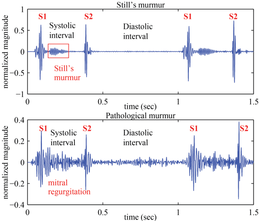

IEEE Transactions in Biomedical Engineering Paper
Abstract: Still's murmur is the most common innocent heart murmur in children. It is also the most commonly misdiagnosed murmur, resulting in a high number of unnecessary referrals to pediatric cardiologist. The purpose of this study was to develop a computer algorithm for automated identification of Still's murmur that may help reduce unnecessary referrals.
